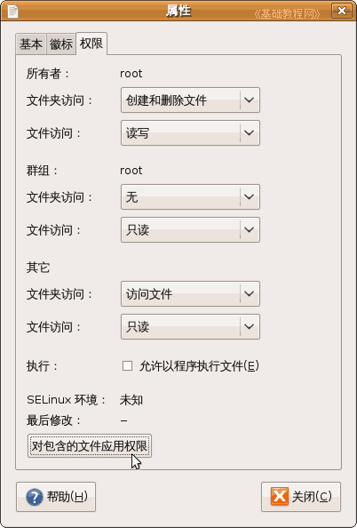

PHPWind论坛安装教程
作者：TeliuTe 来源：基础教程网
这一课我们来安装论坛程序，在服务器上安装网站，下面我们来看一个练习；
1、安装论坛
1）解压下载的论坛安装包，把upload文件夹里的全部内容，都复制到之前设定的d:\www文件夹里；
2）到PhpStudy安装的文件夹里，找到php5文件夹，打开里面的php.ini，检查一下 short_open_tag = On
如果是Off则改成On保存退出，然后到桌面打开phpStudyAdmin，点托盘里的图标，重启Apache；
3）打开IE浏览器，在地址栏输入 http://localhost/install.php 开始安装，如果本机已经设定了固定ip地址，那么就用ip地址，
在出来的安装须知页面右边，点“开始安装”；
4）接下来的许可协议中，点下面的“同意协议”继续；
5）接下来安装论坛数据库，数据库用户名是root，密码是root或者是自己修改的，给管理员账号也设定一个密码，数据库类型选“MySQL”点“下一步”继续；
6）接下来的论坛版块设计，可以先用默认的，点“下一步”继续；
7）接下来的插件选项，也可以用默认的，点“下一步”继续安装；
8）稍等开始安装，安装结束后，出来一个“完成”按钮；
9）点“完成”按钮，出来成功页面，里面有三个网址，分别进入前台、后台和官网；
10）点第一个进入论坛页面，里面已经有一个默认的版区了；
2、Ubuntu 中安装
1）用root用户打开文件管理器，解压upload 里的所有内容到 /opt/lampp/htdocs 原来的只留下xampp文件夹；
2）打开htdocs/文件夹，除了xampp/文件夹以外，全选里面所有内容，点右键选“属性”，设置“其它”权限为“访问文件和只读”，再点“对包含的文件应用权限”，这是设置全局属性；

3）分别将文件夹 attachments/、data/、htm_data/、template/的属性对话框，设置“其它”权限为“创建删除和读写”，并点击“对包含的文件应用权限”，把文件 install.php 的“其它”权限设为读写；
4）在浏览器地址栏输入http://localhost/install.php 或者本机的ip 地址，进入安装程序，步骤同上；
安装完成后，如果不能进入论坛，就自己去删除install.php，然后就可以进入了；
5）如果安装过程中出错，根据提示检查文件权限，或者检查xampp的服务是否启动，如果mysql出错可能就要重装xampp，先停止服务，再重装，不行就得重启了再重装；
本节学习了安装PW7.0的基本方法，如果你成功地完成了练习，请继续学习下一课内容；
本教程由86团学校TeliuTe制作|著作权所有
基础教程网：http://teliute.org/
美丽的校园……
转载和引用本站内容，请保留版权信息和本站链接。